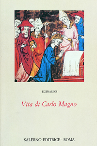
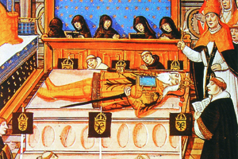

Lezione 7  Sacro romano impero
Sacro romano impero

-
250
320
-
200
195
-
140
255
-
120
340
-
160
215
-
120
205

ROMA
Carlo Magno viene incoronato imperatore da papa Leone III, in San Pietro, a Roma, nella notte di Natale dell’anno 800. Questa miniatura francese del XII secolo raffigura la cerimonia, avvenuta a San Pietro che unisce anche sul piano simbolico l’autorità religiosa e politica dell’imperatore.
AQUISGRANA
La morte del settantaduenne Carlo Magno, avvenuta ad Aquisgrana nell’814, raffigurata in una miniatura quattrocentesca. L’artista mette in evidenza la vecchiaia del sovrano, con la lunga barba bianca, e il suo prestigio, con la splendida armatura. Il successore ed erede dell’Impero sarà il figlio Ludovico il Pio.IMPERO
L’Impero è organizzato in regni, ducati e circa 200 contee. 840: Alla morte di Ludovico scoppiano lotte di successione tra i tre figli: Lotario, Ludovico il Germanico, Carlo il Calvo. 888: con la morte dell’imperatore Carlo il Grosso, succeduto a Ludovico il Germanico, ha fine la discendenza diretta di Carlo Magno. Segue un periodo di anarchia feudale.MARCHE
Le Marche di frontiera sono territori che hanno una funzione difensiva. Vengono istituite per difendersi dagli attacchi arabi.STRASBURGO
842: Giuramento di Strasburgo: Ludovico e Carlo si accordano sulla divisione dell’Impero. Carlo il Calvo diviene re di quei territori che costituiranno la futura Francia, Ludovico il Germanico di quelli che diventeranno la Germania.VERDUN
843: il Trattato di Verdun sancisce la divisione dell’Impero carolingio in vari regni.